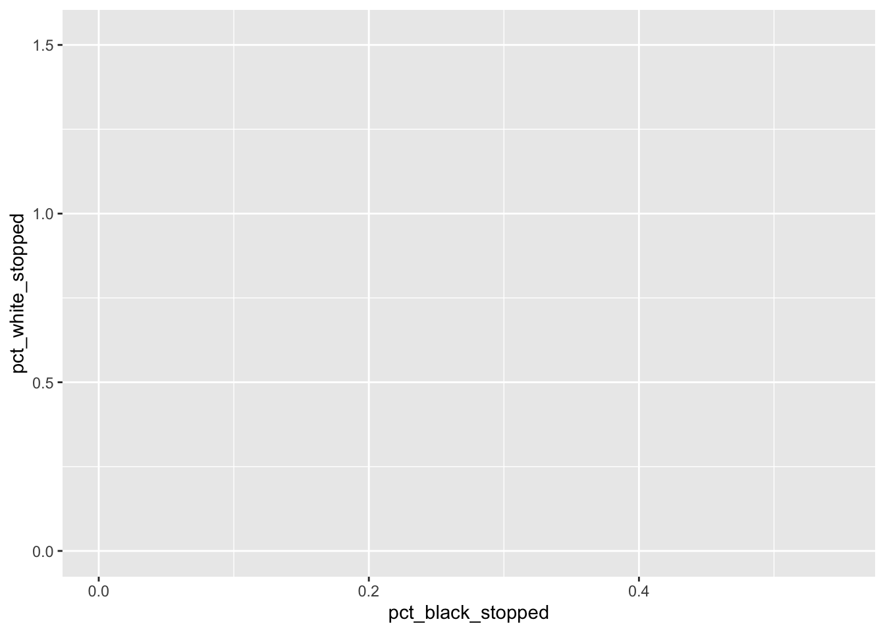
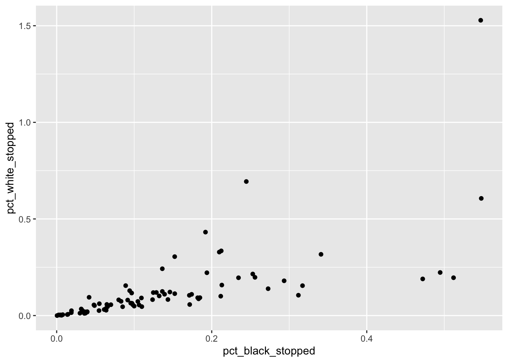
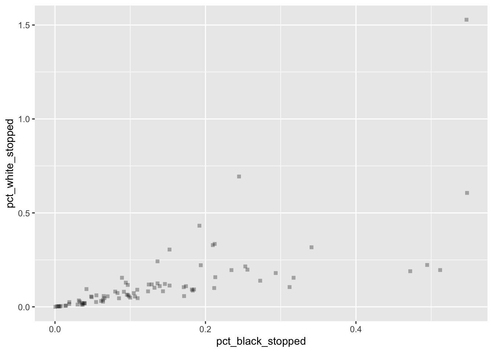
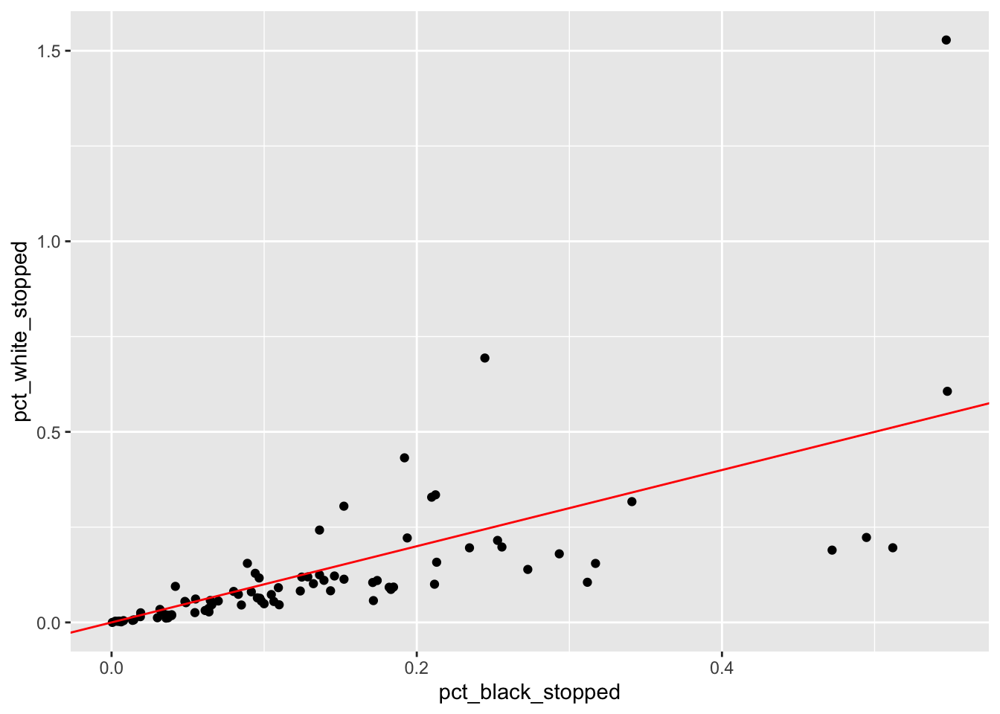
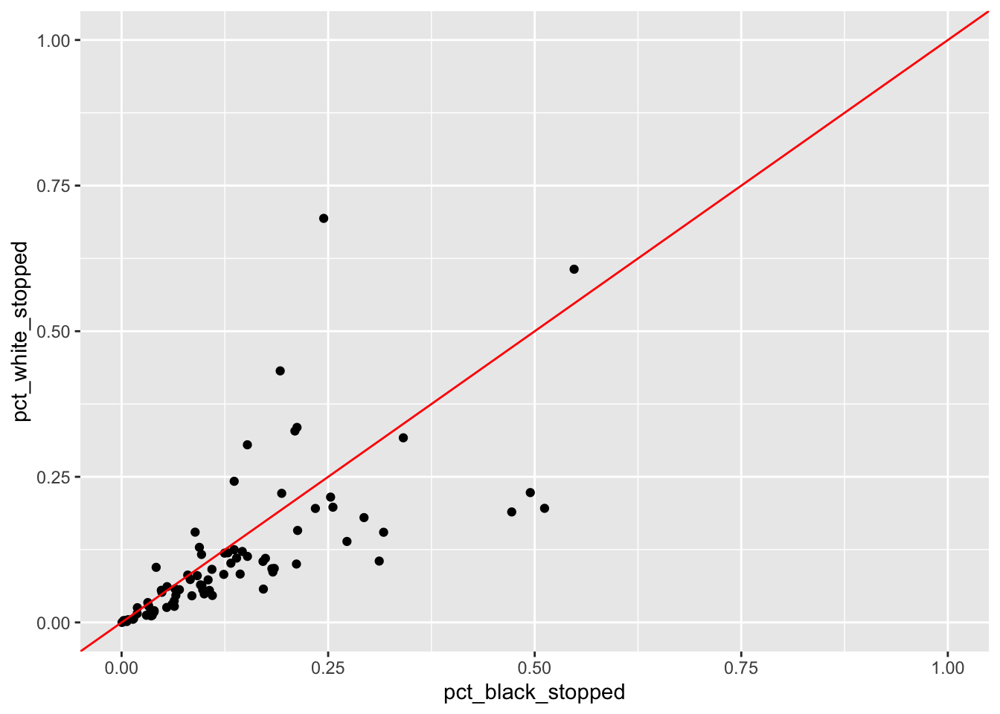

Visualization with ggplot
Presented by William Pang
2022-06-15
This workshop mostly follows a wonderful tutorial created by Claudia Engel, an academic technology specialist and lecturer in Anthropology at Stanford University.
Welcome to the second part of this workshop series, where we will be
covering data visualization using a tool called ggplot,
which is part of the tidyverse package. When I first learnt
ggplot on my own, I was quite confused — I came from coding
in MATLAB, which was very literal (for instance, if you wanted to plot a
sine wave with the equation y = sin(t), it was simply
plot(t,y).
The point of me saying all of this is that if you want to express
more complicated ideas, being literal sometimes does not cut it. If a
good novel only included terse very manner-of-fact dialogues, you would
immediately drop the book. Akin to English, we need a set of rules, a
structure of sorts that helps build up a language. This set of “rules”
is called grammar, and as you will notice with ggplot,
there are a lot of idiosyncrasies that might require some blind faith in
the beginning, but upon mastery you will begin to see the power of
ggplot.
Today, we’ll be working with a dataset from the Stanford Open Policing Project, a project that gathers data across the country on traffic stops made by police officers. In particular, we’ll be looking at police stops in Missippi.
We should now know how to read files from our last tutorial, where we
introduced the read_csv function.
bias <- read_csv("https://raw.githubusercontent.com/cengel/R-data-viz/master/data/MS_stops_by_county.csv")## Rows: 82 Columns: 10
## ── Column specification ────────────────────────────────────────────────────────
## Delimiter: ","
## chr (2): county_name, bias
## dbl (8): county_fips, driver_race_Black, driver_race_White, black_pop, white...
##
## ℹ Use `spec()` to retrieve the full column specification for this data.
## ℹ Specify the column types or set `show_col_types = FALSE` to quiet this message.It’s always a good habit to do a quick scan of the data to contextualize what’s happening.
head(bias, n = 2)What’s we’re looking at is a dataset of policing by counties in Mississippi, with some statistics about the number of black and white drivers being pulled over. The obvious research question to ask from this dataset is whether there is any racial bias in police stopping – perhaps we want to plot some sort of scatterplot comparing the percent of black stopped vs percent of white stopped.
Before we jump into the coding, the first thing to know about
ggplot is that it works in layers, sort of like a cake! The
bottom layer is your data, and you can layers things on top to make an
increasingly sophisticated graph.

As mentioned, the “base” of your cake is the data.
Data/Aesthetics Layer
ggplot(data = bias)
If you just plotted this and pressed run, you will be greeted by a grey screen on the R-studio plot. That’s good! We’ve set the “base” for the cake.
Okay, let’s start adding an argument called aes.
aes refers to aesthetic mapping, which is the idea of
linking variables in the data to graphical properties in the geometry.
If you’re working in a cartesian coordinate system, for example, this
tells us where the datapoint links exactly on the plane.
Let’s add a few more arguments.
ggplot(data = bias, aes(x = pct_black_stopped, y = pct_white_stopped))
Two things here. First, notice that our arguments for the x and y
axis (i.e., pct_black_stopped and
pct_white_stopped) do not have quotation marks on it. This
shouldn’t come as a surprise to us, especially for those who joined my
session last week on Intermediate R, where we introduced the pipe
operator. Remember that ggplot is under the
tidyverse universe (no pun intended), similar to how
dplyr is part of the tidyverse universe.
Geometries Layer
The second question you might ask is “where is my data”? Again,
remember we’ve just mapped the data onto the plane, but we
haven’t told ggplot what the graph we want. This is where
the fancy stuff begins to come into play. For a scatterplot, where we
just want dots or points on the graph, we use the function
geom_point().
ggplot(data = bias, aes(x = pct_black_stopped, y = pct_white_stopped)) +
geom_point()
Notice the + sign that we had to use, which means that
we’re adding an additional layer to our “cake”. One thing to note is
that the + must be added on the same line of your layer –
if you did something like this, for example, it would not work:
# This does not work
ggplot(data = bias, aes(x = pct_black_stopped, y = pct_white_stopped))
+ geom_point()It also doesn’t really matter if the aes argument goes
into the base layer or the geometries layer.
ggplot(data = bias) +
geom_point(aes(x = pct_black_stopped, y = pct_white_stopped))However, for consistency (and readability), we will stick with
putting the aes argument in the data layer.
You can play around with the geom_point argument — for
instance, you don’t want circles on your graph, but want squares
instead. And while we’re at it, you might think the squares are too
dark, so you would like to change the opacity (what a picky
customer!).
ggplot(data = bias, aes(x = pct_black_stopped, y = pct_white_stopped)) +
geom_point(shape = 'square', alpha = 0.3)
Okay, let’s say we wanted to highlight the prevalence of stops among blacks by defining a threshold (e.g., more than 20% of black drivers were stopped in Mississippi between 2013-2016).
ggplot(data = bias, aes(x = pct_black_stopped, y = pct_white_stopped, color = pct_black_stopped > 0.2)) +
geom_point()
You might have initially thought that the color argument
would go into the geometries layer. However, this is not the case,
because what we’re actually doing is creating a new column in our
dataset, creating a TRUE/FALSE statement (i.e., whether the percent of
blacks stopepd is greater than 0.2), and then mapping it onto the plane
using the geom_point function.
However, if we wanted to change something about the properties of the
dots themselves (say we wanted to change the color), we would put our
arguments into the geom_point function.
ggplot(data = bias, aes(x = pct_black_stopped, y = pct_white_stopped)) +
geom_point(color = 'steelblue')